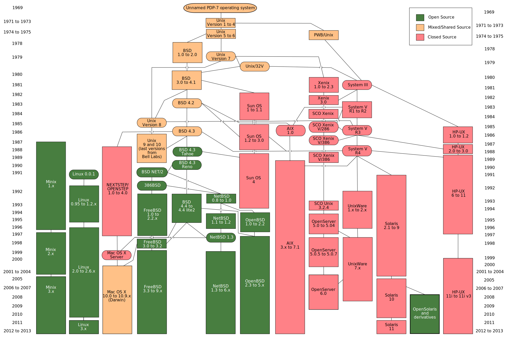

Part I - Introduction
A Brief History of Unix
From Ubuntu to macOS, many popular operating systems are derived from a movement that began in the 1960's. To best understand today's systems, we should begin by reviewing the circumstances that brought all this about.
MULTICS
"The "Stone" by Slilin is licensed under CC BY-NC-ND 2.0
In 1964, AT&T, General Electric, and MIT collaborated on a "time-sharing" operating system. This kind of operating system uses multitasking to rapidly switch between processes running in parallel, allowing multiple people to work simultaneously using remote terminals. That feature was built in to the core architecture, and in Chapter 16 - Users and Groups, we'll see how it persists today.
Bell Labs, 1970
"Bell Labs - Eero Saarinen" by s o d a p o p is licensed under CC BY-ND 2.0
The team at AT&T's Bell Labs decided to start from scratch on a new project with similar goals but a smaller scope. The result was the first version of the Unix operating system.
The system was modified to run on various machines, first within Bell Labs, then at various universities, and then (under software licensing agreements) to commercial workstation manufacturers.
The Unix Wars
The differences between these modified versions of Unix affected the way that programmers wrote application code. A program written for one "flavor" of Unix might not work on another.
This situation caused many to call for a formal standard. Each workstation manufacturer had a vested interest in their particular version to be recognized as the standard implementation. This led to overt competition between the manufacturers, each vying for industry recognition.
Standardization
Over the course of many years, vendors formed two separate open standards groups. These groups ultimately joined to become the Common Open Software Environment alliance. They produced a standard for a set of utilities and programming interfaces named POSIX. Any system that adheres to this standard is today considered "a Unix."
"Unix-like"
"Penguin" by Larry Ewing & Garrett LeSage is licensed under CC0
Meanwhile, the proprietary code in the Unix-derived BSD operating system was re-written, making it a completely standalone project. Separately, the Linux kernel was written from scratch and eventually incorporated into the GNU project to form the GNU/Linux operating system.
While these systems generally target compatibility with the POSIX standard, they are not officially compliant. Because the name "Unix" is a trademark currently registered to the Open Group, these systems cannot be legally referred to as Unix implementations. So we use the term "Unix-like" or "*nix" to describe them.

"Unix history-simple.svg" by Eraserhead1, Infinity0, & Sav_vas is licensed under CC BY-SA 3.0
{kind=link}
The result is an ecosystem of platforms with intertwined histories and sometimes-incompatible features. Speaking *nix doesn't require familiarity with all the edges, but like any pidgin language, it benefits from some appreciation of the history. Hopefully this brief introduction has given you the context you'll need to appreciate the nuances of these systems.